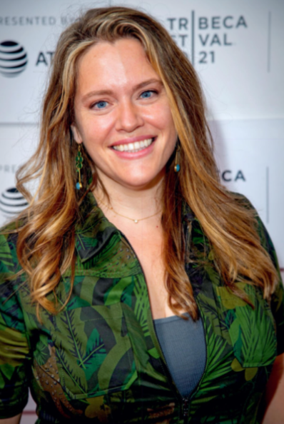

Writer / Journalist / Storyteller / Facilitator
Nadira's always been a curator of conversations: An award-winning culture writer, recognized workplace and generations expert, and passionate advocate for marginalized voices and global sustainability, she's an ever-evolving storyteller who's graced pages and stages from Fortune to HBO to the United Nations.
In the process, Nadira's also become a sought-after speaker, host, and moderator, appearing everywhere from Google and Disney to Comic-Con International. She's rallied audiences worldwide to the causes that matter most and become an outspoken ally in organizations' efforts to connect with the people — both within their ranks and outside their walls — who power their success. Nadira's especially proud to have begun her career as a journalist, profiling such singular subjects as Shawn "Jay-Z" Carter, the Millennial generation, and the rollicking ancient art trade.
A sometime poet, professional sports fan, and Stanford alum, Nadira is eternally grateful to be a Caribbean-American kid, raised in the great state of Connecticut, who calls Brooklyn, New York, home. And she's been happiest of late to be spending time on two more recent projects: a long overdue novel, and her 3-year-old daughter.

Director / Showrunner / Producer / Facilitator
Alexandra is an Emmy and Critics' Choice Award-winning filmmaker whose work explores the power of personal narrative. She directed Bombshell: The Hedy Lamarr Story, a New York Times Critics' Pick and one of Indiewire's top biographical documentaries ever made, and This Is Paris, a portrait of Paris Hilton that reached over 80 million viewers and helped outlaw abusive practices in boarding schools across the country.
Her investigative series Secrets of Playboy won the Critics' Choice Award for Best Justice or Crime Series, and she has since broken viewership records with Where the Truth Lies for Peacock and directed The Judd Family Story for Lifetime. In 2025 she will release a feature documentary for Netflix, tentatively titled "The Great Tinder Revenge."
Alexandra has spent her career drawing out the stories people didn't know they were ready to tell, and creating the conditions where telling them changes something. She lives on the Upper West Side with her husband Chris, her sons Max and Charlie, and their very fluffy dog Callie, who should be credited as a consultant on all her films.